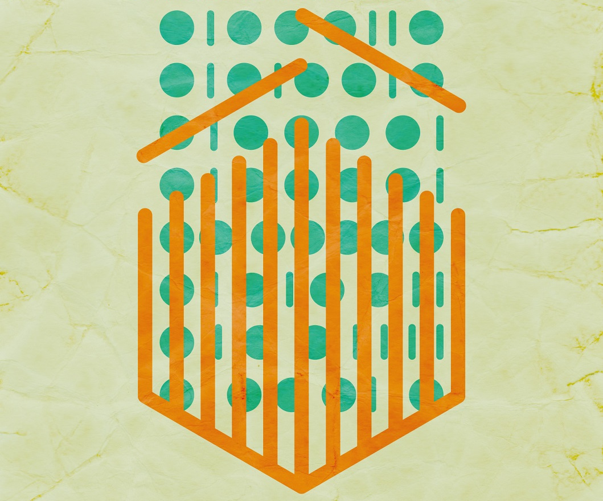
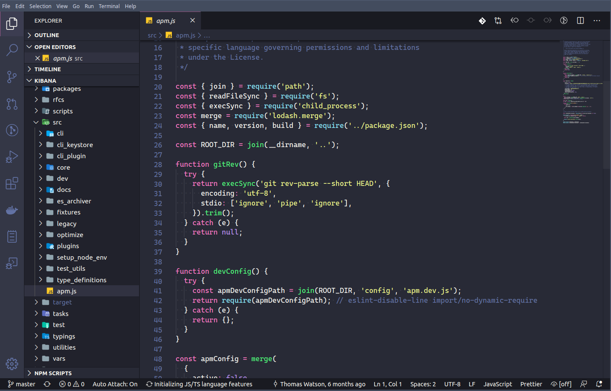
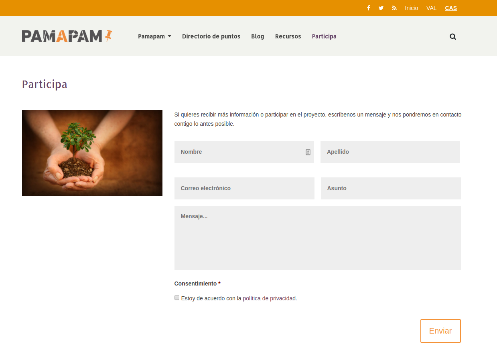

const dormir = async (segs) => {
return new Promise((r) => setTimeout(r, segs * 1000));
};
(async () => {
const textos = ["hola", "setem", "pamapam"];
const pausa = 2;
console.log("¿Empezamos? 🤔");
await dormir(pausa);
for (const texto of textos) {
console.log( '👏 ' + texto);
await dormir(pausa / 4);
}
console.log("¡Fin! 🌈");
})();Software Libre
Bienvenida

Antes de empezar…

Foto de Bernard Hermant en Unsplash
Jorge Sanz
👨🏫 | Ingeniero en Cartografía y Geodesia (UPV) |
🌐 | Aldaia, Valencia |
👨💻 | Elastic, antes en CARTO, Prodevelop |
💜 | |
📧 | |
🐤 | |
🔖 |
📑 Agenda
Bienvenida
Qué es el software libre
Alternativas a software propietario
Discusión
¿Qué es el Software Libre?
Software

Foto de Austin Distel en Unsplash
Todo lo que no es físico en un sistema informático
Código Fuente

Texto que indica a un ordenador cómo ejecutar una tarea
Código fuente: ejemplo
Un programa sencillo escrito en JavaScript
setem.js
Código fuente: ejemplo (2)
$ node setem.js
¿Empezamos? 🤔
👏 hola
👏 setem
👏 pamapam
¡Fin! 🌈Las licencias
Contrato para ceder el derecho a un uso.
Software Libre
Las 4 libertades
El Software Privativo
Por qué es importante el Software Libre
Solidaridad
Flexibilidad
Colaborativo
Eficiencia
Independencia
Diversidad
Seguridad
Software Libre en la práctica
Sistemas Operativos
Ubuntu
Fedora
Debian
Arch Linux
…
Ofimática: LibreOffice
Edición de imágenes
Dibujo Vectorial: Inkscape, Krita
Edición de imágenes: GIMP
Revelado de fotografías: Darktable, Rawtherapee, digiKam, artículo
Edición de vídeo
KDEnvLive
Open Shot
Shotcut
Edición de música
Audacity
LMMS
…
Reproducir medios
Música: audacious, rythmbox, clementine
Vídeo: VLC, mplayer
Fotografías: Eye of Gnome, gthumb, shotwell
Web
Contacto

¡¡Gracias!!
🤓 | Jorge Sanz |
📧 | |
🐤 |
Recursos
…
Recursos para diapos
Título subsección
Subsección con transición personalizada
Código fuente
for in in ls; do echo $i; done